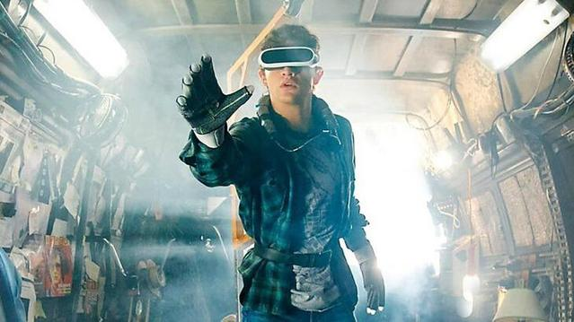
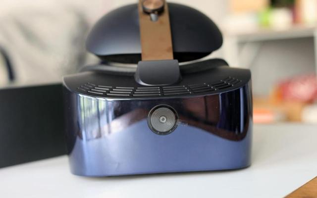
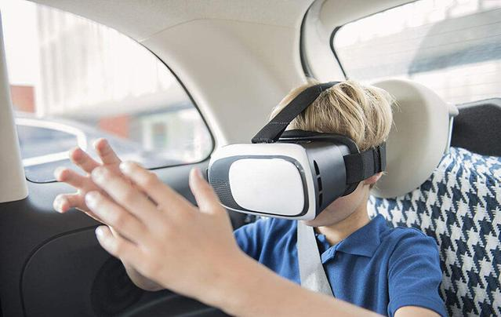
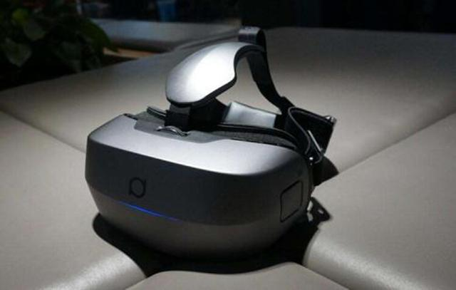

前段时间的头号玩家热映，相信很多游戏党都去看过了吧，当然我也不例外，里面除了热血的剧情意外，最让人眼前一亮的就是其中的游戏装备了，真实触感和VR眼镜了解一下。
是不是很多人了解以后对于里面的游戏体验超级期待呢？不过我只想说，这样的体验在现实生活中的科技就能感受了，特别是VR眼镜的技术上面，有了解过的人一定知道，其中有几十块的，也有几千上万的，那么他们的区别在哪呢？其实不只是真实度的问题哦。
用专业的话来说就是VR眼镜以及VR一体机。VR眼镜盒子和VR一体机这两个产品其实是截然不同的两个东西。
首先来说的几十块几百块的选择，其实简单的说来就是把现在市面上面一些高端一些的手机放入一个头戴的设备里面，设备的内部有专门空间，放置手机，让手机在里面作为显示器来投影，作为想要体验一下效果的小伙伴来说，是非常不错的选择。
相比前面的那个款式，一体机的整体的效果那是突飞猛进的，第一就是观看的清晰度，毕竟其的显示器是自带的，适配能力是最佳的；一体机内部是自带系统的，不用在选择手机放置里面，相对其重量有一些变化了；而且在用它看电影的时候可以随意切换2/3D。